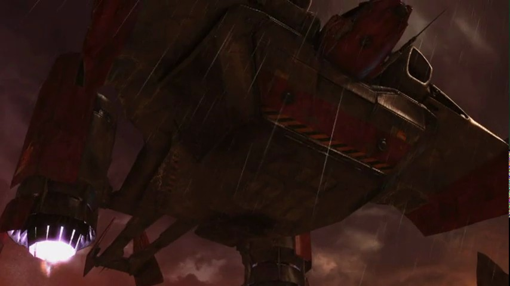

- Stats
- Abilities/Upgrades
- Strategy
- Lore
- Related
Armor: 1
Mineral Repair Cost:
 25
25Gas Repair Cost:
 25
25Repair Time:
 42
42 50/200 | 75/200 with Caduceus Reactor 0.5625 per second
50/200 | 75/200 with Caduceus Reactor 0.5625 per secondDamage: 0
Attacks: 0
Cooldown: 0
Targets: None
Attack Range: 0
Acceleration: 2.255
Collision Radius: 0.75
Requirements: Levels 2-3 requires Armory
| Level |  Level 1 Level 1 |  Level 2 Level 2 | Level 3 |
| Minerals | 100 | 175 | 250 |
| Vespene Gas | 100 | 175 | 250 |
| Time | 160 | 190 | 220 |
| Damage Bonus | 0 | 0 | 0 |
| Total Damage | 0 | 0 | 0 |
100Vespene Cost:
100Supply:
 2
2Produced From: Starport Build Time:
42Requirements: Starport
Unit Type: Armored, Mechanical, Air
Requirements: Levels 2-3 requires Armory
| Level |  Level 1 Level 1 |  Level 2 Level 2 |  Level 3 Level 3 |
| Minerals | 150 | 225 | 300 |
| Vespene Gas | 150 | 225 | 300 |
| Time | 160 | 190 | 220 |
| Armor Bonus | +1 | +2 | +3 |
| Total Armor | 2 | 3 | 4 |
| Icon | Minerals | Vespene Gas | Research Time | Researched At |
| 0 | 0 | 0 | Already Researched |
Range: 4
1Information: Heal can repair 3 points of damage per energy within 4 range on Biological units only. The Medivac must have at least 5 energy to start healing.
This ability can be set to Auto-Cast, which is done by right clicking the icon. This will have the Medivac automatically heal nearby allied biological units.
| Icon | Minerals | Vespene Gas | Research Time | Researched At |
| 100 | 100 | 80 | Tech Lab on Starport |
Information: Caduceus Reactor increases the starting energy of Medivacs from 50 to 75.
| Icon | Minerals | Vespene Gas | Research Time | Researched At |
 | 0 |  0 0 | 0 | Already Researched |
Information: This allows the unit with this ability to load or unload units into it. The Medivac has a maximum capcity of 8 unit size. Not 8 units, but 8 unit size.
If you have any suggestions for more strategies, go ahead and post on the forums 'here'!
+1 Weapons vs Zerglings
When Zealots have a +1 weapon advantage versus Zerglings, they will kill Zerglings in two attacks instead of three. This makes Zealots very effecient against Zerglings until the zerg catches up in armor upgrades.
Because of this, there are a handful of timing attack that take advantage of the effecient +1 weapon zealots, forcing the zerg to make spines, roaches, or some other unit than zerglings unless the zerg wants to trade inefficiently.
+1 Weapons vs Zerglings
Sum text about how gosu this is
+1 Weapons vs Zerglings
Sum text about how gosu this is
- Overview
The medivac concept was first introduced as an improvised solution by the Terran Dominion's 19th Marine Division. The unit was operating in the acid storms of Thalon VII, and modifying a Quantradyne APOD-33 dropship to allow for remote control increased the combat life of medics by decaminutes.
The official adoption of medivacs was carried out by the Dominion Armed Forces. A Dominion post-Brood War analysis found a startling 37% of field-deployed troops became casualties requiring evacuation to the rear. In light of these findings, Emperor Arcturus Mengsk personally ordered Quantradynes redesigned to produce the medivac transport. The redesigned dropship served as a forward triage station and kept units in the field longer, regardless of injury. However, the medivac is very expensive to deploy, and the Dominion has thus maintained the use of traditional infantry medics.
The success of the medivac design caused the Umojan Protectorate and Kel-Morian Combine to adopt them as well. By the Second Great War, the Moebius Foundation had acquired medivacs as well and through them, Raynor's Raiders.
Procyon Industries won the contract to provide the G-226's laser scalpels and auto-sutures by being the lowest bidder. The accuracy and precision of these tools are questioned by marines. Bellerephon developed a new gravity tube for the medivac, allowing almost instant deployment. By the Second Great War, a healing AI had been developed for the medivac, allowing it to acquire and heal two targets simultaneously.
The medivac retains the Quantradyne's rotatable engines, but unlike its predecessor, its boarding/departure ramp is at the front rather than the rear.
{kind=link}
{kind=link}
Source Information
Text information from the Starcraft Wiki.
Photo 1 created by Blizzard Entertainment. Copyright: Blizzard Entertainment.
Photo 2 from StarCraft II cinematic: Fire and Fury. Copyright: Blizzard Entertainment.
| Terran |
| Units |
| Command Center | SCV | Mule |
| Barracks | Marine | Marauder | Ghost | Reaper |
| Factory | Hellion | Siege Tank | Thor |
| Starport | Medivac | Viking | Banshee | Raven | Battlecruiser |
| Structures |
| Basic Buildings | Command Center | Orbital Command | Supply Depot | Refinery |
| Defensive Buildings | Planetary Fortress | Bunker | Missile Turret | Sensor Tower |
| Infantry Buildings | Barracks | Engineering Bay | Ghost Academy |
| Mechanical Buildings | Factory | Starport | Armory | Fusion Core |
| Add-ons/Spawned | Auto-Turret | Point Defense Drone | Tech Lab | Reactor |